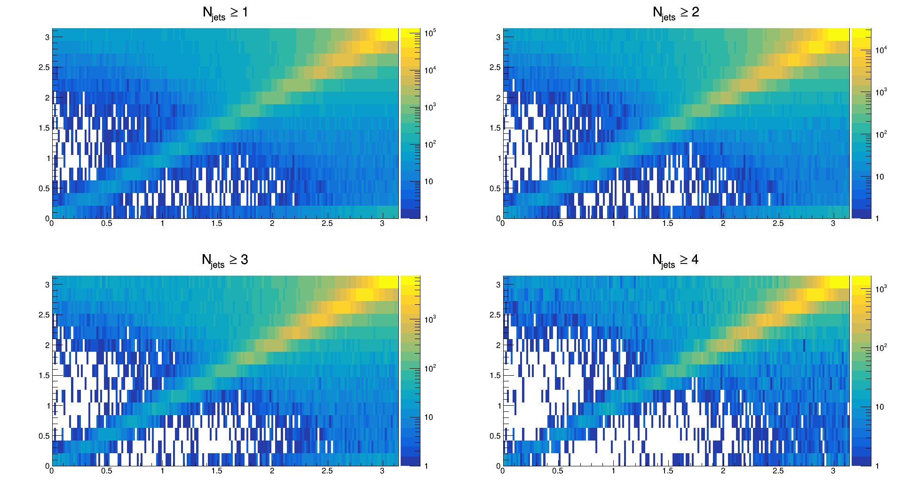
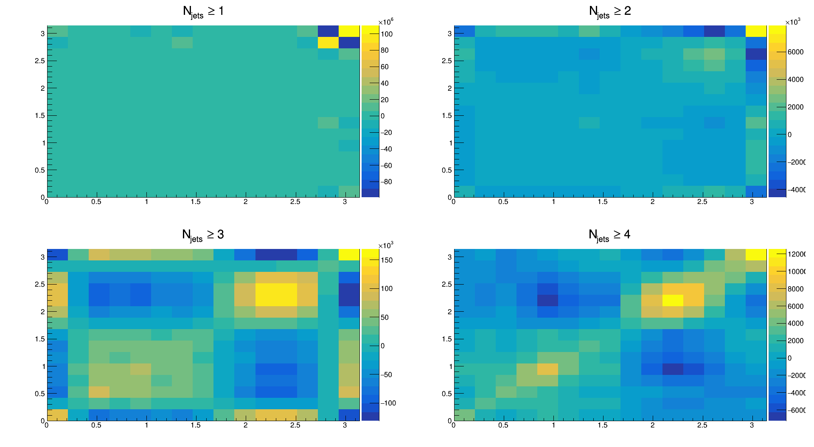
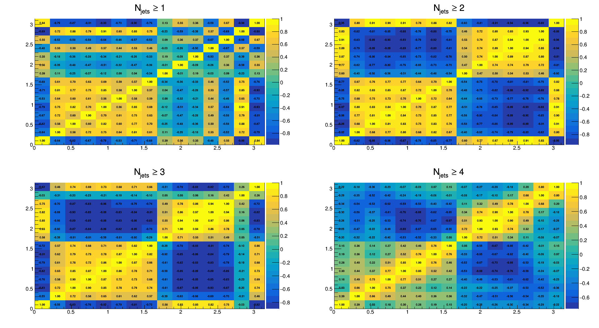

Measurement of the azimuthal decorrelation angle
between the leading jet and scattered lepton
in deep inelastic scattering at HERA
50 < Q
2
< 100 GeV
Migration matrices

Covariance matrices

Correlation matrices
